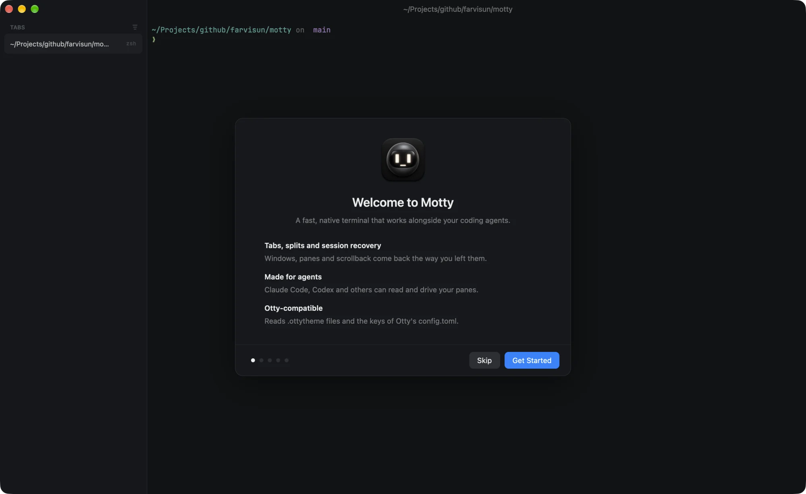
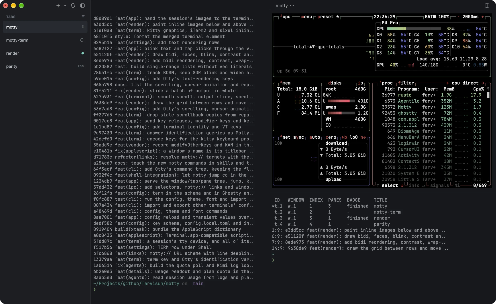
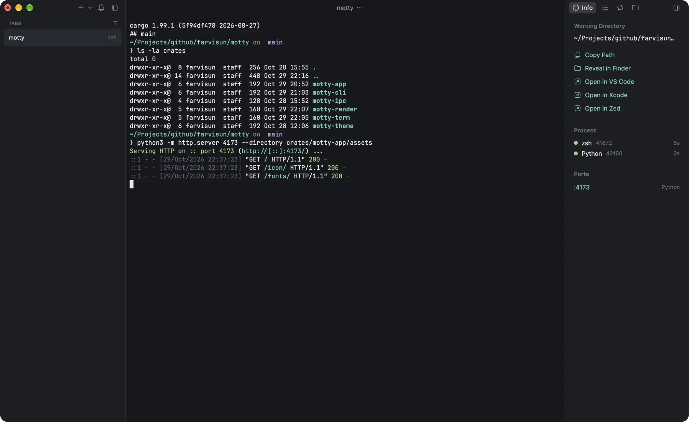
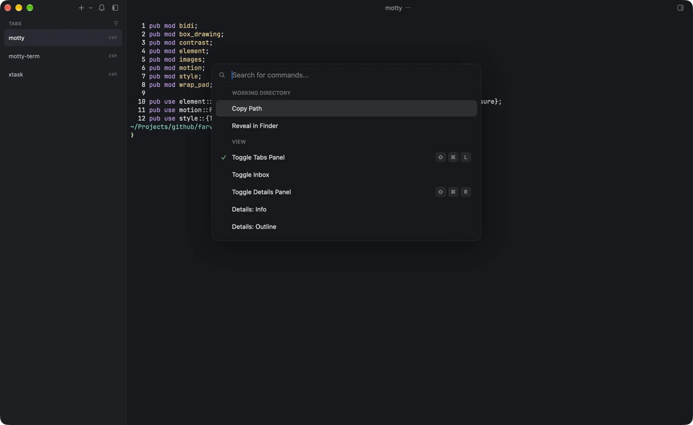
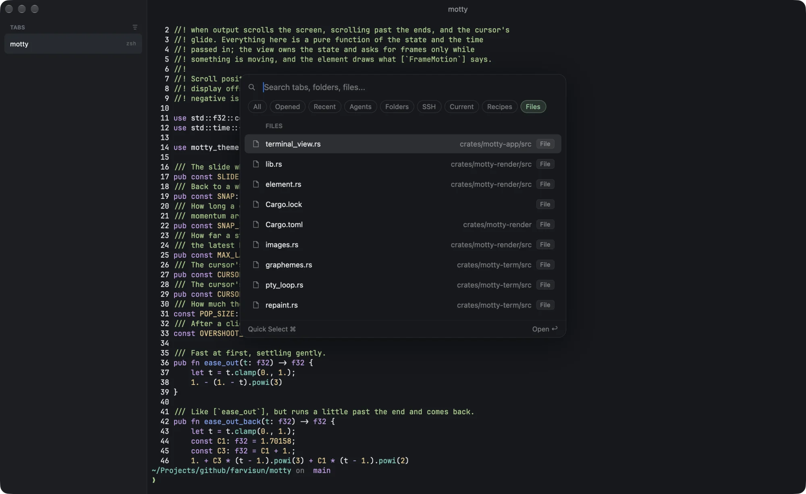
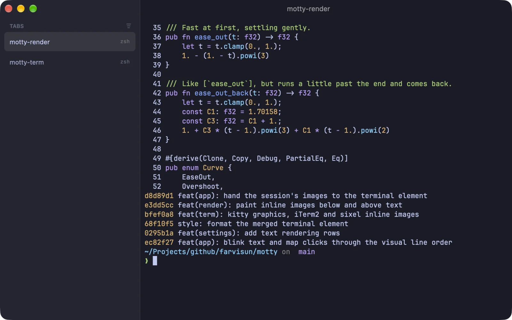
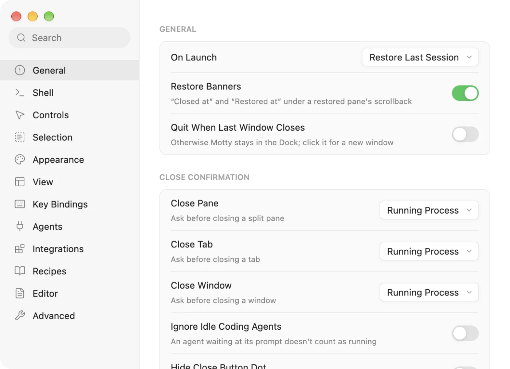

A minute to set up
The first launch walks through a theme, the MCP command for your agent and installing the motty CLI. Only the lines it sets change in your config.
A fast, GPU-accelerated terminal for macOS. Tabs, splits and sessions that come back the way you left them, and a built-in MCP server so Claude Code, Codex and other agents can read and drive your panes.
Free · MIT or Apache-2.0 · macOS 13+ · Apple silicon & Intel

Agents
Coding agents shouldn't have to guess what's on your screen. Motty serves its panes over MCP, so an agent can list them, read output, search scrollback, run a command in a split and wait for it to finish.
Agents never type into their own pane. They split one off and work there, while you watch. The same operations are a shell command away with the motty CLI, for scripts and for you.
❯ claude mcp add motty -- motty mcp
Added stdio MCP server motty with command: motty mcp
❯ motty pane split -d down --command "cargo test"
7
❯ motty pane wait --pane 7
❯ motty pane capture --pane 7 --last-command | tail -3
test theme::tests::missing_palette_is_error ... ok
test result: ok. 169 passed; 0 failed; 1 ignored
finished in 1.49s
❯ motty watch -- cargo build --release
⠋ building on tab t_2 … you'll get a badge and a notification
❯ Details panel

The folder, the processes in the pane and the ports they listen on. One click opens it in your editor or browser.
With Claude Code, Codex or omp running, see context in use, tokens, cost and plan quota, read from the agent's own logs.
Every command the pane ran, newest last. Branch, diff stats and changed files without leaving the terminal.
Keyboard


Themes
Eighteen themes built in, light and dark picked per system appearance. Drop .ottytheme files or fonts into the config folder and they show up. Save the config and open windows change right away.
Coming from Ghostty, Kitty or Alacritty? motty import brings your config along.

Features

The first launch walks through a theme, the MCP command for your agent and installing the motty CLI. Only the lines it sets change in your config.

Every toggle writes one line to config.toml and applies to every window. Search all settings by typing.
Windows, tabs, splits, folders and scrollback, colors included, are restored on the next launch, and after a crash.
Kitty graphics, iTerm2 and Sixel, painted on the GPU and anchored to the text around them.
Move through scrollback with vi keys, select blocks, and label every link and path on screen to open it from the keyboard.
Suggestions from the commands you ran in this folder, as dim text after the cursor. Secrets are never remembered.
zsh, bash and fish report prompts, exit status and folder (OSC 133, OSC 7), so commands become something you can jump to and capture.
⌘-click a URL or file:line:col to open it. Relative paths resolve against the shell's folder.
Under the hood
Drawn by GPUI on Metal, with a patched alacritty_terminal for the VT state.
Install
One universal build for Apple silicon and Intel Macs running macOS 13 or later.
Open Motty.dmg and drag Motty to Applications.
Not notarized yet. The first time, right-click Motty in Applications and choose Open, or run xattr -dr com.apple.quarantine /Applications/Motty.app.
Also links the motty command.
brew install --cask farvisun/tap/mottyRequires a Rust toolchain.
git clone https://github.com/farvisun/motty.git
cd motty
cargo xtask bundle --release
open target/release/Motty.app